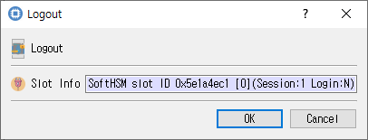

Logout Dialog
This guide describes the Logout dialog implemented by logout_dlg.cpp, logout_dlg.h, and logout_dlg.ui.

Purpose
Use this dialog to end the authenticated state for the selected session (C_Logout). Logging out does not close the session; it ends the current login state associated with it.
Displayed information
| Control | Description |
|---|---|
| Slot Info | Read-only information identifying the selected slot/token. The session used for logout is the one recorded for that selection. |
Buttons
| Button | Description |
|---|---|
| OK | Requests logout from the selected session. On success, CryptokiMan clears its recorded login state and closes the dialog. |
| Cancel | Closes the dialog without logging out. |
An open session is required. If no session is open, CryptokiMan displays a message. If the PKCS #11 logout call fails, an error is shown and the dialog is rejected.
Typical use
- Select the slot/session that is currently logged in.
- Choose Module > Logout.
- Select OK to log out, or Cancel to keep the current login state.